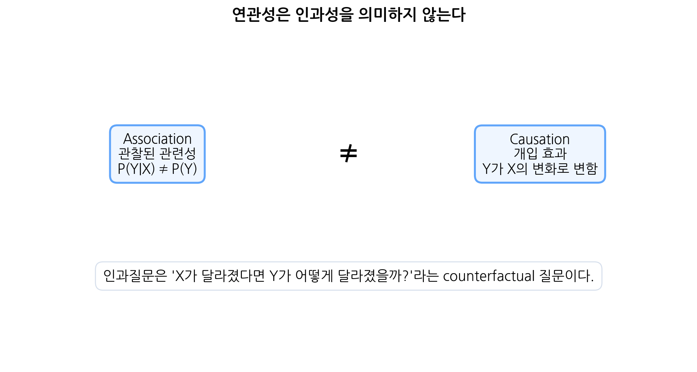
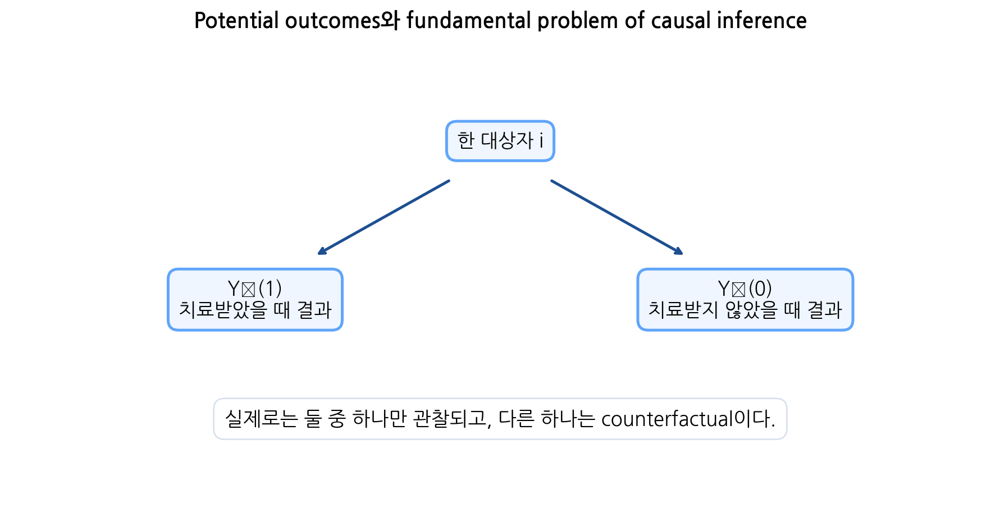
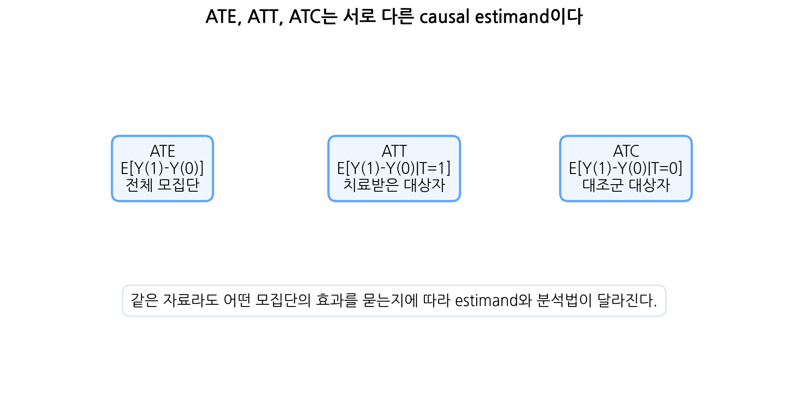
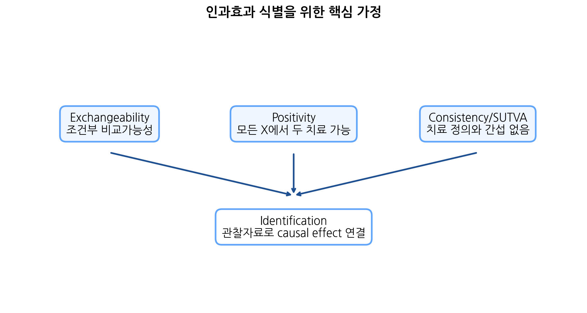
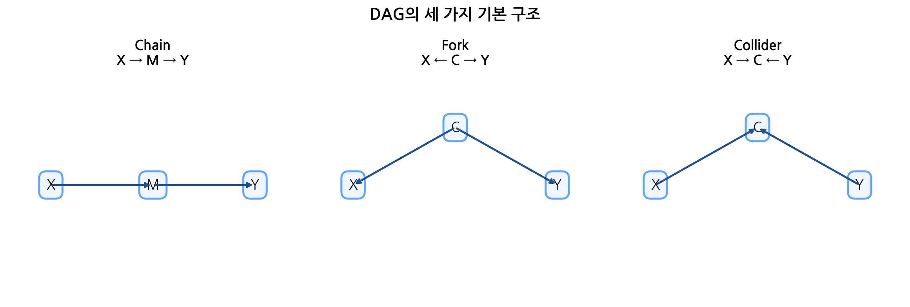
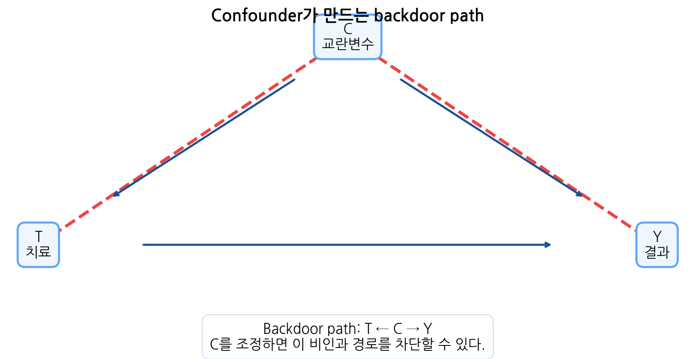
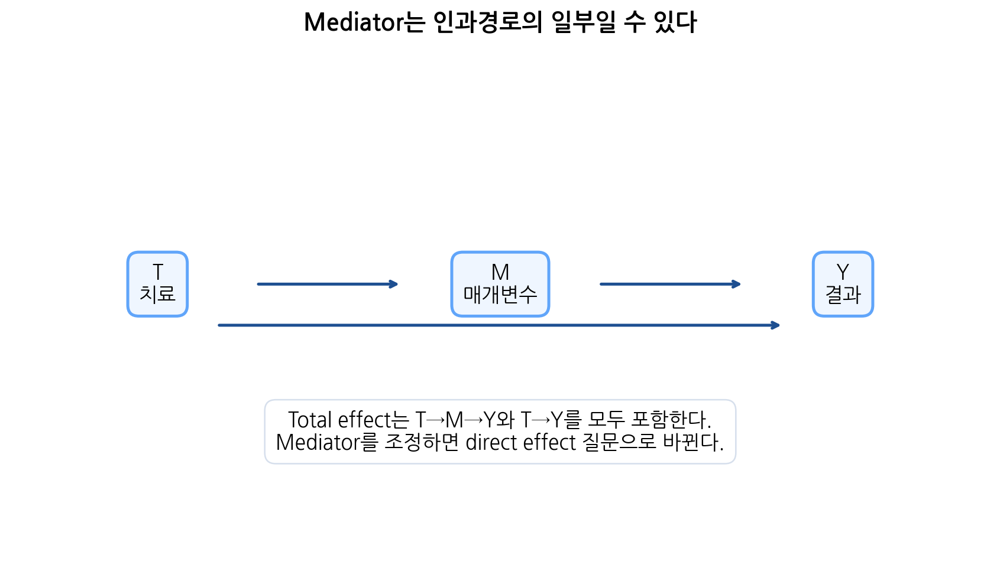
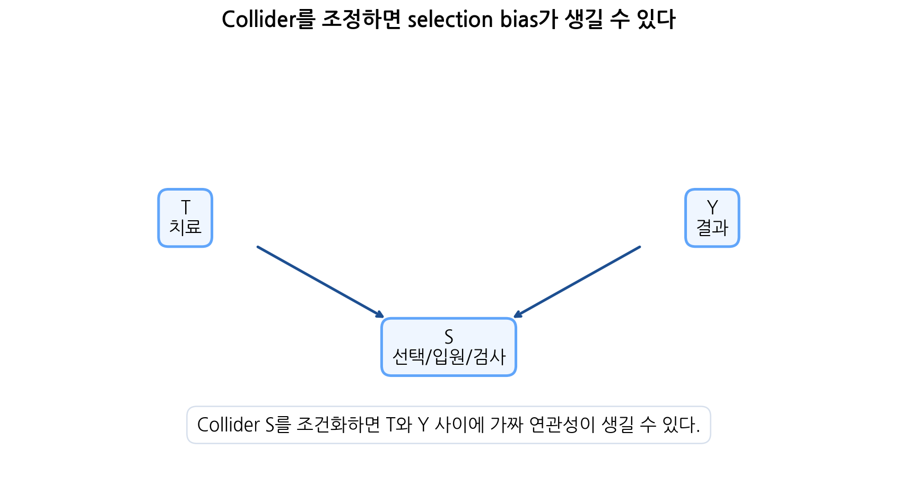
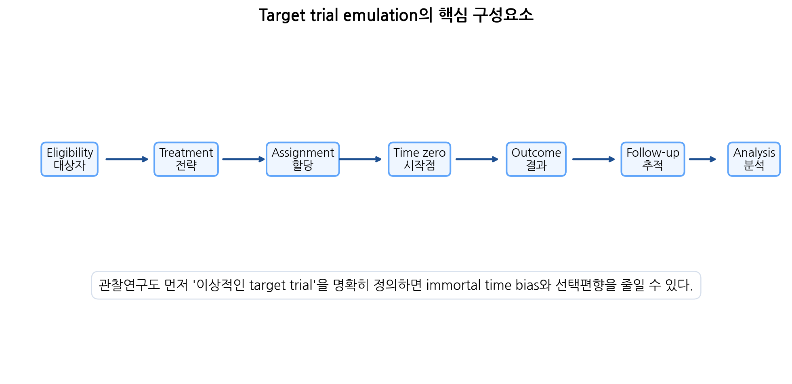

이번 장에서는 causal inference(인과추론)의 기초 개념을 학습한다. 의학 연구에서 가장 중요한 질문은 단순히 “두 변수가 관련되어 있는가?”가 아니라 “어떤 원인을 바꾸면 결과가 실제로 달라지는가?”인 경우가 많다.
예를 들어 다음 질문을 생각해 보자.
신약 A는 사망률을 낮추는가?
운동은 혈압을 낮추는가?
금연은 폐암 발생을 줄이는가?
조기 수술은 장기 생존을 향상시키는가?
특정 중환자 치료전략은 사망 위험을 줄이는가?
건강검진은 암 사망률을 감소시키는가?
이 질문들은 모두 인과질문이다. 단순히 신약을 받은 사람의 사망률이 낮다는 관찰만으로 신약이 사망률을 낮췄다고 결론 내릴 수 없다. 신약을 받은 사람들이 더 젊거나, 질병이 덜 심하거나, 의료 접근성이 더 좋았을 수 있기 때문이다. 반대로 적극적 치료를 받은 사람의 사망률이 높더라도 치료가 해로운 것이 아니라 원래 더 중증인 환자에게 치료가 선택되었기 때문일 수 있다.
인과추론은 이러한 문제를 다룬다. 핵심은 다음 질문이다.
같은 대상자가 치료를 받았을 때와 받지 않았을 때 결과가 어떻게 달라졌을까?
이 질문은 관찰된 자료만으로는 직접 답할 수 없다. 같은 사람에게 동시에 두 치료 상태를 적용할 수 없기 때문이다. 따라서 인과추론은 관찰되지 않은 counterfactual outcome에 대한 추론이다.

연관성은 인과성을 의미하지 않는다.
이번 장에서는 현대 인과추론의 기본 언어를 다룬다.
association과 causation의 차이
potential outcomes
counterfactual
fundamental problem of causal inference
ATE, ATT, ATC
exchangeability
positivity
consistency
SUTVA
DAG
confounder, mediator, collider
backdoor path
selection bias
time-varying confounding
target trial emulation
Note핵심 메시지
인과추론의 핵심은 “관찰된 연관성”을 “개입했을 때의 효과”로 해석하기 위해 필요한 질문, 가정, 설계, 분석을 명확히 하는 것이다.
13.2 핵심 질문
질문
연결되는 개념
연관성과 인과성은 어떻게 다른가?
association vs causation
Counterfactual이란 무엇인가?
관찰되지 않은 잠재 결과
왜 개인 수준 인과효과는 직접 관찰할 수 없는가?
fundamental problem
Potential outcome은 어떻게 정의하는가?
\(Y(1)\), \(Y(0)\)
ATE, ATT, ATC는 어떻게 다른가?
causal estimand
무작위배정은 왜 인과추론에 강한가?
exchangeability
관찰연구에서 인과효과를 추정하려면 어떤 가정이 필요한가?
exchangeability, positivity, consistency
DAG는 무엇을 도와주는가?
조정변수 선택, bias 구조
Confounder, mediator, collider는 어떻게 다른가?
causal structure
Backdoor path는 어떻게 차단하는가?
adjustment set
Collider를 조정하면 왜 문제가 되는가?
selection bias
Target trial emulation은 왜 필요한가?
관찰연구 설계 명확화
13.3 학습목표
이번 수업이 끝나면 학생들은 다음을 할 수 있어야 한다.
Association과 causation의 차이를 설명할 수 있다.
Counterfactual과 potential outcome의 의미를 설명할 수 있다.
Individual causal effect와 average causal effect의 차이를 설명할 수 있다.
Fundamental problem of causal inference를 설명할 수 있다.
ATE, ATT, ATC를 수식으로 정의하고 해석할 수 있다.
Exchangeability, conditional exchangeability의 의미를 설명할 수 있다.
Positivity, consistency, SUTVA의 의미와 위반 사례를 설명할 수 있다.
DAG의 기본 구조인 chain, fork, collider를 구분할 수 있다.
Confounder, mediator, collider를 구분하고 조정 여부를 판단할 수 있다.
Backdoor path와 adjustment set의 개념을 설명할 수 있다.
Selection bias와 collider stratification bias를 설명할 수 있다.
Time-varying confounding의 기본 문제를 설명할 수 있다.
Target trial emulation의 구성요소를 설명할 수 있다.
R 시뮬레이션을 통해 confounding, regression adjustment, IPTW, collider bias를 확인할 수 있다.
의학 논문에서 인과추론 주장을 비판적으로 평가할 수 있다.
14 왜 causal inference가 필요한가?
14.1 예측질문과 인과질문
의학 연구 질문은 크게 예측질문과 인과질문으로 나눌 수 있다.
질문 유형
예
핵심 관심
예측질문
이 환자는 1년 내 사망할 위험이 높은가?
미래 outcome 예측
설명적 연관성
혈압과 신장기능은 관련이 있는가?
변수 간 관련성
인과질문
혈압을 낮추면 신장기능 악화를 줄일 수 있는가?
개입 효과
정책질문
국가검진을 확대하면 암 사망률이 줄어드는가?
전략의 효과
예측모형은 인과효과가 없어도 좋은 예측을 할 수 있다. 예를 들어 질병의 말기 징후는 사망을 잘 예측할 수 있지만, 그 징후를 제거한다고 사망이 줄어드는 것은 아닐 수 있다. 반대로 인과효과가 있는 치료라도 효과크기가 작으면 개별 예측에는 크게 기여하지 않을 수 있다.
14.2 Association과 causation
Association은 두 변수가 통계적으로 관련되어 있다는 뜻이다.
\[P(Y|X)\neq P(Y)\]
Causation은 \(X\)를 개입으로 바꾸면 \(Y\)가 바뀐다는 뜻이다.
\[Y^{do(X=x)}\]
즉 인과성은 관찰이 아니라 개입과 관련된다. “운동하는 사람이 더 건강하다”는 association이다. “운동하도록 개입하면 건강이 좋아진다”는 causation이다.
14.3 아이스크림과 익사 예시
아이스크림 판매량과 익사 사고는 양의 상관관계를 가질 수 있다. 하지만 아이스크림이 익사를 유발한다고 해석하면 오류이다.
공통 원인은 기온 또는 계절이다.
\[Temperature \rightarrow IceCream\]
\[Temperature \rightarrow Drowning\]
기온이 높으면 아이스크림 판매도 증가하고, 수영과 물놀이도 증가하여 익사 사고가 늘 수 있다. 이때 기온은 confounder이다.
15 Potential outcomes framework
15.1 Potential outcome
Neyman-Rubin potential outcomes framework에서는 각 대상자에게 가능한 치료 상태별 outcome이 존재한다고 생각한다.
\[Y_i(1)=\text{대상자 } i \text{가 치료를 받았을 때 outcome}\]
\[Y_i(0)=\text{대상자 } i \text{가 치료를 받지 않았을 때 outcome}\]

Potential outcomes와 fundamental problem of causal inference.
15.2 Individual causal effect
개인 수준 인과효과는 다음과 같다.
\[Y_i(1)-Y_i(0)\]
예를 들어 어떤 환자에게서
\[Y_i(1)=0,\quad Y_i(0)=1\]
이고 outcome이 사망 여부라면, 치료를 받으면 사망하지 않고 치료를 받지 않으면 사망한다는 의미이다. 이 환자에게 치료는 사망을 예방하는 인과효과가 있다.
하지만 실제로는 한 시점에서 같은 사람이 치료를 받으면서 동시에 받지 않을 수 없다. 따라서 개인 수준 인과효과는 직접 관찰할 수 없다.
15.3 Fundamental problem of causal inference
관찰되는 outcome은 다음과 같이 표현할 수 있다.
\[Y_i = T_iY_i(1)+(1-T_i)Y_i(0)\]
치료를 받은 사람은 \(Y_i(1)\)만 관찰되고 \(Y_i(0)\)은 관찰되지 않는다. 치료를 받지 않은 사람은 \(Y_i(0)\)만 관찰되고 \(Y_i(1)\)은 관찰되지 않는다.
실제 치료
관찰 outcome
관찰되지 않은 counterfactual
\(T=1\)
\(Y(1)\)
\(Y(0)\)
\(T=0\)
\(Y(0)\)
\(Y(1)\)
이처럼 인과추론은 본질적으로 missing data problem이다. 관찰되지 않은 counterfactual outcome을 어떻게 추론할지가 핵심이다.
Important핵심
인과효과는 같은 대상자의 두 potential outcome 차이로 정의되지만, 실제로는 둘 중 하나만 관찰할 수 있다.
16 Causal estimand
16.1 Average treatment effect
개인 수준 인과효과는 직접 관찰할 수 없으므로 평균 인과효과를 정의한다. 가장 대표적인 estimand는 average treatment effect, ATE이다.
\[ATE=E[Y(1)-Y(0)]\]
이는 전체 모집단에서 모든 사람이 치료를 받았을 때와 모든 사람이 대조 상태였을 때의 평균 outcome 차이이다.
16.2 ATT와 ATC
ATE 외에도 여러 estimand가 있다.
16.2.1 ATT
Average treatment effect among treated, ATT는 실제 치료를 받은 대상자에서의 평균 인과효과이다.
\[ATT=E[Y(1)-Y(0)|T=1]\]
질문은 다음과 같다.
실제로 치료받은 사람들에게 치료가 어떤 효과를 가졌는가?
16.2.2 ATC
Average treatment effect among controls, ATC는 실제 대조군 대상자에서의 평균 인과효과이다.
\[ATC=E[Y(1)-Y(0)|T=0]\]
질문은 다음과 같다.
실제 대조군이었던 사람들이 치료를 받았더라면 outcome이 어떻게 달라졌을까?

ATE, ATT, ATC는 서로 다른 causal estimand이다.
16.3 Estimand를 먼저 정해야 하는 이유
같은 치료 효과 연구라도 estimand에 따라 분석 대상과 해석이 달라진다.
Estimand
질문
흔한 방법
ATE
전체 모집단에서 치료전략을 바꾸면?
IPTW, standardization
ATT
실제 치료받은 사람에게 효과는?
matching, ATT weighting
ATC
대조군에게 치료를 적용하면?
ATC weighting
Per-protocol effect
계획대로 치료를 받으면?
censoring 조정
Intention-to-treat effect
배정 전략의 효과는?
RCT 주 분석
인과분석에서는 통계모형보다 먼저 estimand를 명확히 해야 한다.
17 무작위배정과 인과추론
17.1 Randomization의 핵심 역할
무작위배정 임상시험에서는 치료 배정이 potential outcomes와 독립이 되도록 설계한다.
\[(Y(1),Y(0)) \perp T\]
이것이 exchangeability이다. 무작위배정 덕분에 치료군과 대조군은 평균적으로 치료를 제외하면 비교가능하다.
따라서
\[E[Y(1)] = E[Y|T=1]\]
\[E[Y(0)] = E[Y|T=0]\]
가 성립하고, 단순 평균 차이가 ATE를 추정할 수 있다.
17.2 관찰연구에서의 문제
관찰연구에서는 일반적으로 다음이 성립하지 않는다.
\[(Y(1),Y(0)) \not\perp T\]
예를 들어 더 중증인 환자가 적극적 치료를 받을 가능성이 높다면, 치료군은 대조군보다 원래 outcome이 나쁠 가능성이 크다. 이 경우
\[E[Y|T=1]-E[Y|T=0]\]
은 치료효과와 confounding이 섞인 값이다.
18 인과효과 식별 가정
18.1 Exchangeability
Exchangeability는 치료군과 대조군이 potential outcome 관점에서 비교가능하다는 의미이다.
무작위배정에서는 다음이 기대된다.
\[(Y(1),Y(0)) \perp T\]
관찰연구에서는 관찰된 공변량 \(X\)를 조건으로 다음이 성립한다고 가정한다.
\[(Y(1),Y(0)) \perp T \mid X\]
이를 conditional exchangeability 또는 no unmeasured confounding이라고 한다.
18.2 Positivity
Positivity는 모든 공변량 패턴에서 치료와 대조 치료를 받을 가능성이 모두 있어야 한다는 가정이다.
\[0<P(T=1|X=x)<1\]
특정 \(X=x\)에서 모든 사람이 치료를 받거나 모든 사람이 치료를 받지 않는다면, 그 공변량 패턴에서 counterfactual comparison을 할 수 없다.
예를 들어 아주 중증인 환자는 모두 치료군이고 경증 환자는 모두 대조군이라면, 중증 환자에서 치료받지 않았을 때의 outcome을 관찰자료에서 배울 수 없다.
18.3 Consistency
Consistency는 실제로 받은 치료와 해당 potential outcome이 일치한다는 가정이다.
\[T=1 \Rightarrow Y=Y(1)\]
\[T=0 \Rightarrow Y=Y(0)\]
이 가정이 의미 있으려면 treatment가 명확히 정의되어야 한다. 예를 들어 “운동”이라는 치료가 주 1회 걷기인지, 주 5회 고강도 운동인지 불명확하면 consistency가 흔들린다.
18.4 SUTVA
SUTVA는 stable unit treatment value assumption이다. 두 가지 의미를 포함한다.
한 대상자의 치료가 다른 대상자의 outcome에 영향을 주지 않는다.
치료의 여러 버전이 동일한 outcome 의미를 가진다.
첫 번째는 interference 없음이다. 백신 연구에서는 한 사람의 접종이 다른 사람의 감염 위험을 줄일 수 있으므로 interference가 있을 수 있다.
두 번째는 treatment version 문제이다. 같은 “수술”이라도 술자 경험, 수술법 세부 차이, 병원 시스템이 다르면 같은 treatment라고 보기 어려울 수 있다.
18.5 세 가정의 관계

인과효과 식별을 위한 핵심 가정.
가정
질문
위반 예
Exchangeability
비교군이 counterfactual을 대표하는가?
미측정 중증도
Positivity
모든 X에서 비교 대상이 있는가?
특정 환자군 모두 치료
Consistency/SUTVA
치료와 outcome 정의가 명확한가?
치료 버전 다양, interference
이 가정들이 적절해야 관찰자료에서 인과효과를 추정할 수 있다.
19 DAG의 기본
19.1 DAG란?
DAG는 directed acyclic graph의 약자이다. 변수 사이의 인과관계를 화살표로 표현한 그래프이다.
Directed: 화살표 방향이 있다.
Acyclic: 순환 고리가 없다.
Graph: 노드와 화살표로 구성된다.
DAG는 다음을 도와준다.
confounder를 식별한다.
조정해야 할 변수와 조정하면 안 되는 변수를 구분한다.
collider bias를 피한다.
mediator 조정이 질문을 바꾼다는 것을 이해한다.
selection bias를 설명한다.
인과효과 식별 가능성을 평가한다.
19.2 DAG의 세 가지 기본 구조

DAG의 세 가지 기본 구조.
19.2.1 Chain
\[X \rightarrow M \rightarrow Y\]
\(M\)은 \(X\)와 \(Y\) 사이의 경로에 있다. \(M\)을 조정하면 \(X\)의 효과 중 \(M\)을 통한 경로를 차단한다.
19.2.2 Fork
\[X \leftarrow C \rightarrow Y\]
\(C\)는 공통 원인이다. \(C\)는 confounder가 될 수 있고, 조정하면 backdoor path를 차단한다.
19.2.3 Collider
\[X \rightarrow C \leftarrow Y\]
\(C\)는 collider이다. Collider는 조정하지 않으면 경로를 막고 있지만, collider를 조건화하면 경로가 열린다.
20 Confounder, mediator, collider
20.1 Confounder
Confounder는 치료와 outcome의 공통 원인이다.
\[C \rightarrow T\]
\[C \rightarrow Y\]
Confounder가 있으면 치료와 outcome 사이에 비인과적 경로가 생긴다.
\[T \leftarrow C \rightarrow Y\]
이 경로는 backdoor path이다. 치료효과를 추정하려면 confounder를 조정해 이 경로를 차단해야 한다.

Confounder가 만드는 backdoor path.
20.2 Mediator
Mediator는 치료와 outcome 사이의 인과경로에 있는 변수이다.
\[T \rightarrow M \rightarrow Y\]
예를 들어 항고혈압제가 혈압을 낮추고, 낮아진 혈압이 뇌졸중 위험을 줄인다면 혈압 변화는 mediator일 수 있다.

Mediator는 인과경로의 일부일 수 있다.
Mediator를 조정하면 total effect가 아니라 direct effect에 가까운 다른 질문을 하게 된다. 따라서 total effect가 관심이면 mediator를 조정하면 안 된다.
20.3 Collider
Collider는 두 변수의 공통 결과이다.
\[T \rightarrow S \leftarrow Y\]
Collider를 조정하거나 collider의 특정 값으로 제한하면 원래 없던 연관성이 생길 수 있다. 이를 collider stratification bias 또는 selection bias라고 한다.

Collider를 조정하면 selection bias가 생길 수 있다.
예를 들어 병원 입원 여부가 질병 중증도와 치료 여부 모두의 영향을 받는다면, 입원 환자만 분석하는 것은 collider conditioning이 될 수 있다.
20.4 조정 여부 요약
변수 유형
조정 여부
이유
Confounder
조정
backdoor path 차단
Mediator
total effect에서는 조정하지 않음
인과경로 일부 차단
Collider
조정하지 않음
bias 경로를 열 수 있음
Precision variable
경우에 따라 조정
정밀도 향상 가능
Instrumental variable
주의
분산 증가 또는 bias 가능
Post-treatment variable
대체로 조정 금지
치료 이후 변수
21 Backdoor criterion과 identification
21.1 Backdoor path
치료 \(T\)에서 outcome \(Y\)로 가는 경로 중 \(T\)로 들어오는 화살표로 시작하는 경로를 backdoor path라고 한다.
예:
\[T \leftarrow C \rightarrow Y\]
이 경로는 치료의 인과효과가 아니라 confounding을 나타낸다. 조정변수 집합 \(Z\)가 모든 backdoor path를 막고, \(T\)의 후손을 포함하지 않으면 causal effect를 식별할 수 있다.
21.2 Adjustment set
Adjustment set은 치료효과 추정을 위해 조정해야 하는 변수들의 집합이다. 좋은 adjustment set은 다음 조건을 만족해야 한다.
모든 confounding path를 차단한다.
mediator를 포함하지 않는다.
collider를 포함하지 않는다.
치료 이후 변수를 포함하지 않는다.
가능한 한 측정 가능한 baseline 변수로 구성된다.
DAG는 adjustment set 선택을 돕는다. 하지만 DAG 자체는 자료에서 자동으로 주어지지 않는다. 연구자의 지식과 문헌, 임상적 이해를 바탕으로 구성해야 한다.
22 Propensity score와 causal inference
22.1 Propensity score의 위치
지난 장에서 배운 propensity score는 인과추론에서 conditional exchangeability를 이용하는 한 방법이다. 관찰된 공변량 \(X\)를 조건으로 교환가능성이 성립한다고 가정하면, PS를 이용해 치료군과 대조군의 \(X\) 분포를 균형화하려고 한다.
\[e(X)=P(T=1|X)\]
PS는 confounder 조정을 위한 도구이지, 인과추론 가정을 자동으로 보장하지 않는다.
22.2 PS 방법과 DAG의 연결
PS model에 어떤 변수를 넣을지는 DAG와 연구질문에 의해 결정되어야 한다. 단순히 treatment를 잘 예측하는 변수를 넣는 것이 아니라, confounding을 줄이는 데 필요한 변수를 포함해야 한다.
confounder는 포함한다.
outcome의 강한 예측변수는 포함하는 것이 유리할 수 있다.
mediator는 total effect 추정에서는 제외한다.
collider는 제외한다.
치료 후 변수는 제외한다.
23 Selection bias와 collider bias
23.1 Selection bias
Selection bias는 분석에 포함되는 과정이 exposure와 outcome 모두와 관련될 때 발생할 수 있다. 이는 collider conditioning의 한 형태로 이해할 수 있다.
예를 들어 특정 검사를 받은 환자만 포함하는 연구를 생각하자. 검사 시행 여부가 증상 중증도와 outcome 위험 모두에 영향을 받는다면, 검사 시행 환자만 분석하는 것은 bias를 만들 수 있다.
23.2 Collider bias 예시
입원 환자만 분석하는 연구에서 치료와 사망의 관계를 평가한다고 하자. 입원 여부는 치료 접근성, 질병 중증도, outcome 위험과 관련될 수 있다. 입원이라는 collider에 조건화하면 치료와 outcome 사이의 가짜 연관성이 생길 수 있다.
Warning핵심 주의
“자료에 있으니까 조정한다”는 접근은 위험하다. Collider나 mediator를 조정하면 오히려 bias가 생길 수 있다.
24 Time-varying confounding
24.1 시간의존 교란
Time-varying confounding은 시간이 지나면서 confounder가 변하고, 이전 치료가 이후 confounder에 영향을 주며, 그 confounder가 이후 치료와 outcome에 영향을 주는 상황이다.
예를 들어 HIV 치료 연구에서 CD4 수치가 다음 역할을 동시에 할 수 있다.
이후 치료 변경의 원인
이후 outcome의 예측인자
이전 치료의 결과
이 경우 단순 회귀조정은 치료효과의 일부 경로를 차단할 수 있다.
24.2 Marginal structural model
Time-varying confounding에서는 marginal structural model과 inverse probability weighting이 사용될 수 있다. 기본 아이디어는 시간별 치료와 censoring 확률의 역수를 이용해 가중 pseudo-population을 만드는 것이다.
이번 장에서는 개념만 소개하고, 실제 적용은 더 심화 과정에서 다룬다.
25 Target trial emulation
25.1 왜 target trial이 필요한가?
관찰연구에서 인과질문을 명확히 하려면 먼저 이상적인 무작위배정 임상시험을 상상해야 한다. 이를 target trial이라고 한다. 그 다음 관찰자료로 그 trial을 최대한 모사한다.
Target trial emulation은 다음 편향을 줄이는 데 도움을 준다.
immortal time bias
time-zero misalignment
selection bias
exposure misclassification
unclear eligibility
post-treatment adjustment
inappropriate comparator

Target trial emulation의 핵심 구성요소.
25.2 Target trial protocol의 구성요소
구성요소
질문
Eligibility criteria
누가 연구에 들어오는가?
Treatment strategies
어떤 치료전략을 비교하는가?
Assignment procedures
이상적으로 어떻게 배정되는가?
Time zero
추적 시작점은 언제인가?
Outcome
무엇을 결과로 보는가?
Follow-up
언제까지 추적하는가?
Causal contrast
ITT effect, per-protocol effect 등 무엇인가?
Analysis plan
어떤 방법으로 추정하는가?
관찰자료 분석에서도 time zero를 명확히 정의해야 한다. 치료군은 약물 시작일, 대조군은 임의의 진료일처럼 다르게 정의하면 immortal time bias가 생길 수 있다.
26 R 실습
26.1 예제 1: Confounding 시뮬레이션
치료가 실제로 outcome을 낮추지만, 중증도가 높은 환자에게 치료가 더 많이 선택되는 상황을 만든다.
전체 자료에서는 치료효과가 없지만, selected 대상자로 제한하면 treatment와 outcome 사이에 가짜 관련성이 생길 수 있다.
26.8 예제 3: DAGitty 소개
DAG를 그리거나 adjustment set을 확인할 때 dagitty 패키지를 사용할 수 있다. 설치되어 있으면 다음 코드를 실행할 수 있다.
library(dagitty)g <-dagitty("dag { C -> T C -> Y T -> Y}")adjustmentSets( g,exposure ="T",outcome ="Y")
DAGitty는 DAG 기반 adjustment set 탐색에 유용하지만, DAG 자체는 연구자가 임상 지식에 근거해 구성해야 한다.
27 실제 의학 연구에서의 예
27.1 예시 1: 약물 효과 연구
건강보험자료에서 신약 사용자와 기존 약물 사용자의 심혈관 사건 위험을 비교한다고 하자. 신약 사용자는 더 젊고, 최근 진단받았으며, 동반질환이 적을 수 있다. 단순 비교는 신약의 효과를 과대평가할 수 있다.
이때 인과추론 관점에서 확인할 것은 다음이다.
target trial의 eligibility가 명확한가?
신약 시작 시점과 기존 약물 시작 시점이 같은 time zero인가?
치료 전 confounder가 충분히 측정되었는가?
propensity score 또는 weighting 후 balance가 좋은가?
outcome 정의와 추적기간이 두 군에서 동일한가?
치료 중단, 변경, 순응도를 어떻게 다루었는가?
unmeasured confounding 가능성을 논의했는가?
27.2 예시 2: ICU 치료 전략
중환자실에서 특정 치료전략이 사망률을 낮추는지 평가한다고 하자. 더 중증인 환자에게 치료가 적용되면 치료군의 사망률이 높게 관찰될 수 있다. 반대로 생존 가능성이 높은 환자에게만 치료가 제공되면 효과가 과대평가될 수 있다.
중환자 자료에서는 특히 time-varying confounding과 immortal time bias를 조심해야 한다. 치료 시작 전까지 생존해야 치료군에 들어갈 수 있다면, 치료군에 인위적인 생존시간이 생긴다. 이 문제를 피하려면 time zero와 treatment strategy를 명확히 정의해야 한다.